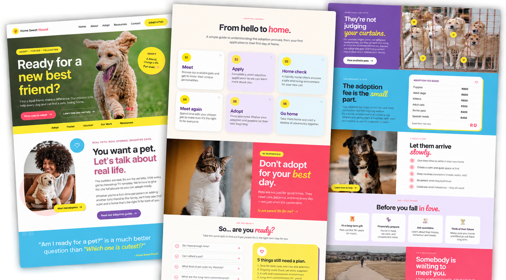

Home Sweet Hound
PET ADOPTION GUIDE
Every dog deserves a home, and every home deserves a little love with four paws. I created Home Sweet Hound to make exploring pet adoption feel warmer, simpler, and a little less overwhelming. 🐾💗
Built with
HTML
CSS
JavaScript